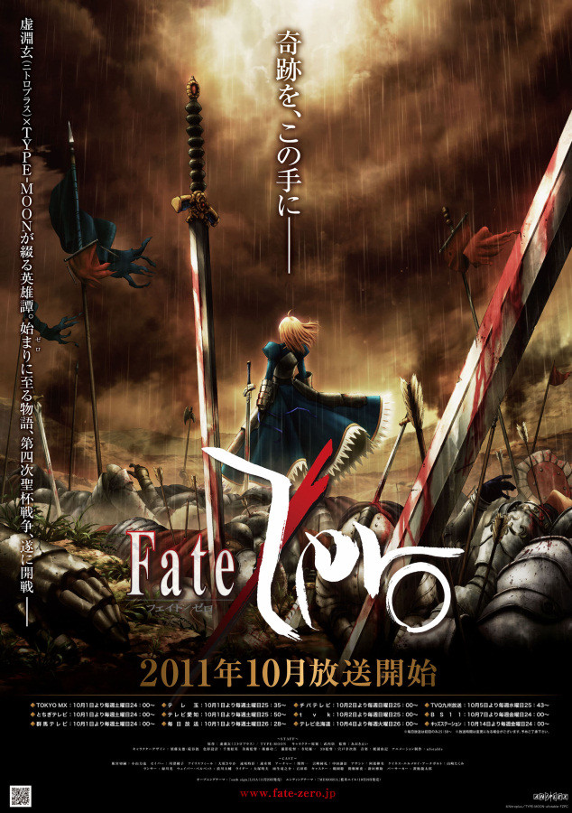

Fate/Zero
我要讓在冬木發生的這場戰爭，成為人類流下的最後的鮮血！
——衛宮切嗣，第四次聖杯戰爭開戰
|  |
|---|
| 基本資料 |
| 作品原名 | Fate/Zero フェイト/ゼロ |
|---|---|
| 作品譯名 | 命運/零、命運零點 |
| 原作載體 | 小說 |
| 原作作者 | 虛淵玄 |
| 改編載體 | 動畫、漫畫、ADV手遊 |
| 相關作品 | Fate/stay night |
原作介紹
如果Fate/stay night是描述情侶面對逆境的故事，Fate/Zero就是講述魔術師們互相廝殺戰鬥的慘烈故事。因為是系列的前傳，故登場人物除Saber（阿爾托莉雅）和吉爾伽美什外其他人物與Fate/stay night不同。該作講述的是第四次聖杯戰爭時的故事。早在2004年的時候，原著遊戲外傳Fate/hollow ataraxia製作時，就已經同步製作的官方外傳小說，一開始是虛淵玄玩完《Fate/stay night》後，非常激動，寫着玩兒的，只有第一卷《第四次聖杯戰爭秘話》，而後在好基友奈須蘑菇的慫恿下，於2006年正式文庫化，將這個坑填完，並成為官方作品。
原作小說共四卷，分別為：第一卷《第四次聖杯戰爭秘話》、第二卷《王者的狂宴》、第三卷《逝去的人們》、第四卷《煉獄之炎》。
2011年原作者虛淵玄又重新將其編輯整理為文庫版，共分為:《第四次聖杯戰爭秘話》、《英靈參集》、《王者的狂宴》、《往逝之人》、《煉獄之炎》、《暗之胎動》六卷。
劇情簡介
這是回到過去，回歸零點的故事。
為了追求被稱為奇蹟的聖杯的所有權，七位魔術師作為Master召喚了自己的Servant，在這究極的死斗中，不擇手段，以期成為活下來的最後一人，這就是聖杯戰爭。
在經過了三次未能得到定論的戰爭後，如今，聖杯戰爭的火焰再次被點燃，第四次的戰鬥即將打響。
魔術師們踏上前往作為戰場的冬木市的道路，他們的肩上承載着各自的夢想，驅使着他們向着勝利進發。然而，在他們之中，有一個男人，無法在他自己的戰鬥中找到任何意義。他的名字，叫做言峰綺禮。
無法理解命運對他的安排，綺禮懷着疑惑，向聖杯發問：為何聖杯將其中一個令咒給予了他？但是不久，戰鬥的命運，讓他與另一個男人相逢，其名為衛宮切嗣。
比任何人都要冷血，比任何人都要無情，他比任何一個人都更覬覦聖杯的奇蹟。
這是在大人氣遊戲Fate/stay night中，只被提到過的第四次聖杯戰爭的秘話，士郎的養父、凜的父親、年輕的言峰綺禮所演繹的物語的真相，即將在這裡揭曉！